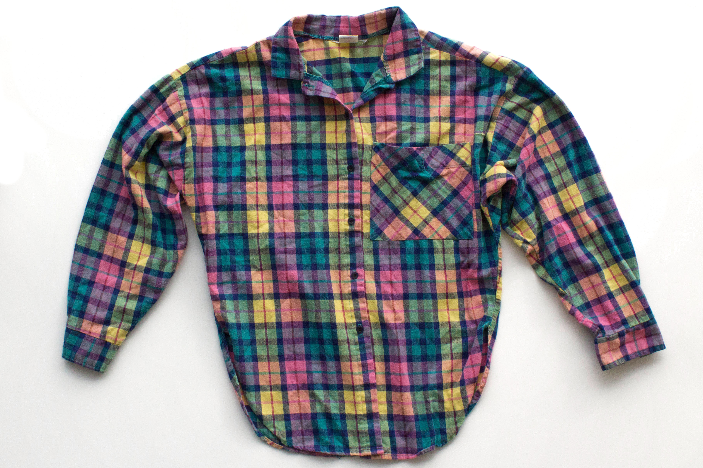

The factory, with its dust-saturated atmosphere and rats running across the floor, is always upsetting. Even after years of ten-hour days in the stifling Los Angeles heat, there are always worrying new details. At the same time, while the repetitive job of sewing buttons onto the same plain collared shirt is boring, and earning well below the minimum wage is disheartening, the alternatives to working in the garment factory are decidedly worse. Regardless, the fact that the job is both dangerous and mind-numbing remains true. Sewing on each button quickly and effectively requires both skill and labor, but after years of doing the same task, I have developed a rhythm. So now, it is easier for my mind to wander to the struggles my coworkers and I are facing in terms of disease, exhaustion, and financial strain, and the clashing sounds of the machines in the background do little to calm me.
A few weeks ago, we received a new shipment of fabric: while it was still the same cotton we have always used and we were still making the same button-downs we have always manufactured, the color was a vibrant rainbow plaid full of excitement and hope. When we rolled out the fabric bolt, the bright hue introduced a sharp new contrast we had never seen on the factory floor, and the colorful light spilled through our windowless room, momentarily drowning out the monochrome landscape of machines, product, plainly-dressed workers, and dirt. Ignoring the looming threat of our supervisors noticing that we were not at our stations, we flocked around to examine the bolt.
The other workers and I smiled – while it was certainly a small change, having a break in our usual drudgery gave us a valuable opportunity to connect. We laughed at the fabric and wondered why the specialty order had been made: Had a textile mill made a mistake? Had there been sudden demand for more exciting, casual button-downs? As we joked, our conversation drifted towards our personal lives and the struggles we were facing because of our taxing jobs, and one essential question rose from our collective discussion: how could we be making such a festive garment in such a dreadful place?
Such a revelation prompted some of us to act by writing cases and speaking to news outlets about our terrible conditions. We argued that while the company we made garments for was proudly celebrating that all of their products were manufactured in the United States, they were not delivering the proper labor conditions traditionally associated with domestic manufacturing. Of course, these efforts were temporary: the public’s attention span is incredibly short, the wealth of the company we work for ensures that no legislation will ever stop them, and my coworkers and I are already overworked and exhausted. And so, our menial tasks of cutting, stitching, and sewing on the same plain buttons remained, even on a rainbow palette.